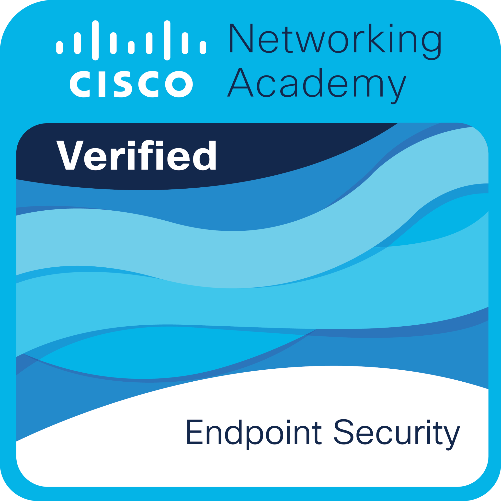

Cybersecurity Learning Path
Colección de certificaciones enfocadas en ciberseguridad, redes, análisis SOC, administración de amenazas y hacking ético.
Conceptos Básicos de Redes
Comunicación entre dispositivos, protocolos y conectividad.
Reflexión y Aprendizajes
Esta certificación permitió comprender los conceptos fundamentales relacionados con redes de computadoras y comunicación entre dispositivos. Durante el curso se estudiaron temas como direccionamiento IP, protocolos de comunicación, modelos OSI y TCP/IP, así como el funcionamiento básico de switches, routers y puntos de acceso.
Uno de los aspectos más importantes fue entender cómo la conectividad impacta directamente en el funcionamiento de organizaciones modernas. También se desarrollaron habilidades relacionadas con identificación de problemas de red, interpretación de configuraciones y análisis de tráfico básico.
Además de fortalecer conocimientos técnicos, esta certificación ayudó a comprender la importancia de mantener infraestructuras de red seguras, organizadas y correctamente configuradas para garantizar disponibilidad y estabilidad operativa.

Dispositivos de Red y Configuración Inicial
Configuración de routers, switches y dispositivos empresariales.
Reflexión y Aprendizajes
Esta certificación permitió adquirir conocimientos prácticos sobre configuración inicial de dispositivos de red utilizados dentro de infraestructuras empresariales. Durante las actividades realizadas se configuraron routers y switches, además de aplicar parámetros básicos relacionados con conectividad y administración.
También se aprendieron comandos utilizados en ambientes reales para verificar interfaces, administrar configuraciones y solucionar problemas comunes relacionados con redes empresariales.
Gracias a esta formación fue posible comprender la importancia de una correcta implementación de dispositivos de red para garantizar un funcionamiento estable y seguro dentro de organizaciones.

Seguridad en Terminales
Protección de endpoints y mitigación de amenazas.
Reflexión y Aprendizajes
Durante esta certificación se analizaron amenazas que afectan dispositivos finales y estaciones de trabajo, incluyendo malware, ransomware y ataques de phishing. También se estudiaron controles utilizados para fortalecer la seguridad de sistemas operativos y proteger información sensible.
Uno de los principales aprendizajes fue la importancia de mantener sistemas actualizados y monitoreados constantemente para reducir vulnerabilidades explotables por atacantes.
Además, esta formación ayudó a comprender cómo la protección de endpoints representa una parte crítica dentro de la seguridad organizacional moderna.

Administración de Amenazas Cibernéticas
Identificación, análisis y mitigación de amenazas digitales.
Reflexión y Aprendizajes
Esta certificación permitió comprender diferentes tipos de amenazas cibernéticas y metodologías utilizadas para identificarlas y mitigarlas. Se estudiaron escenarios reales relacionados con ransomware, vulnerabilidades críticas y ataques dirigidos.
También se fortalecieron conocimientos relacionados con análisis de riesgos, monitoreo de eventos y respuesta a incidentes dentro de ambientes empresariales.
Gracias a esta formación fue posible desarrollar una visión más estratégica sobre la gestión de amenazas y la importancia de aplicar controles preventivos de seguridad.

Carrera Profesional de Analista Junior
Monitoreo SOC, análisis de eventos y respuesta a incidentes.
Reflexión y Aprendizajes
Esta certificación integró conocimientos orientados al trabajo dentro de centros de operaciones de seguridad (SOC), incluyendo monitoreo continuo, análisis de eventos y documentación de incidentes.
También permitió comprender el flujo de trabajo utilizado por equipos de ciberseguridad para detectar actividades sospechosas y responder ante amenazas de forma organizada.
Además de fortalecer habilidades técnicas, esta formación ayudó a desarrollar pensamiento analítico y capacidad para interpretar alertas relacionadas con seguridad informática.

Hacker Ético
Pentesting y evaluación ofensiva de vulnerabilidades.
Reflexión y Aprendizajes
Esta certificación permitió comprender metodologías utilizadas en pruebas de penetración y análisis ofensivo de seguridad. Durante el curso se estudiaron técnicas relacionadas con reconocimiento, identificación de vulnerabilidades y explotación controlada de sistemas.
También se analizó cómo piensan los atacantes y la importancia de implementar controles preventivos para reducir riesgos dentro de organizaciones modernas.
Además, esta formación fortaleció habilidades relacionadas con pensamiento crítico, análisis técnico y evaluación de seguridad desde una perspectiva ética y profesional.